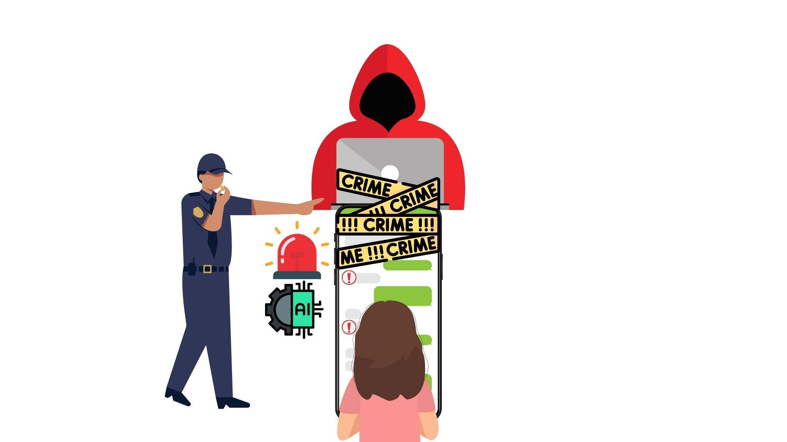
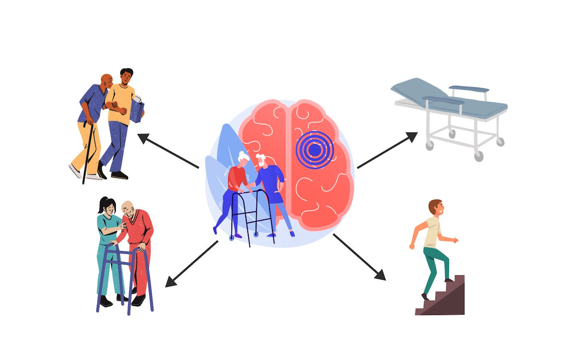
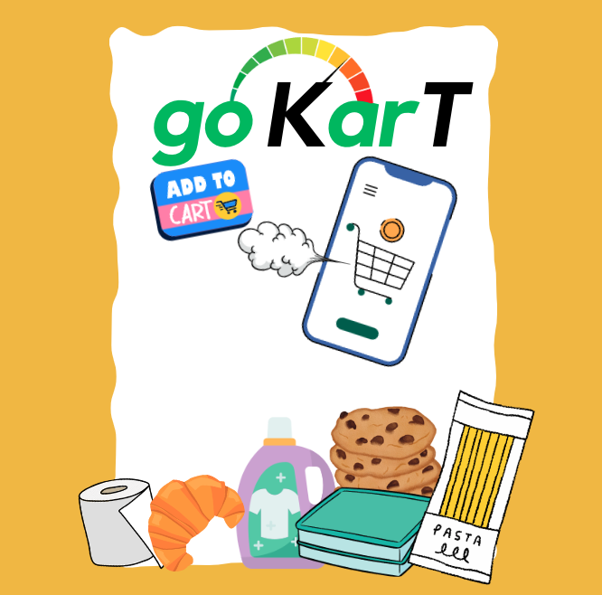
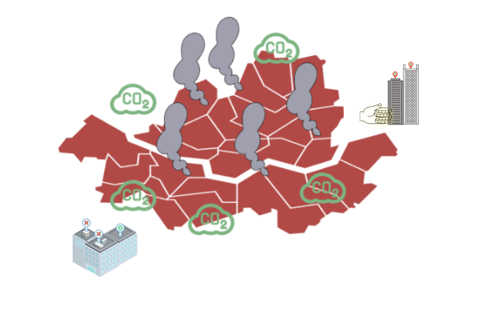
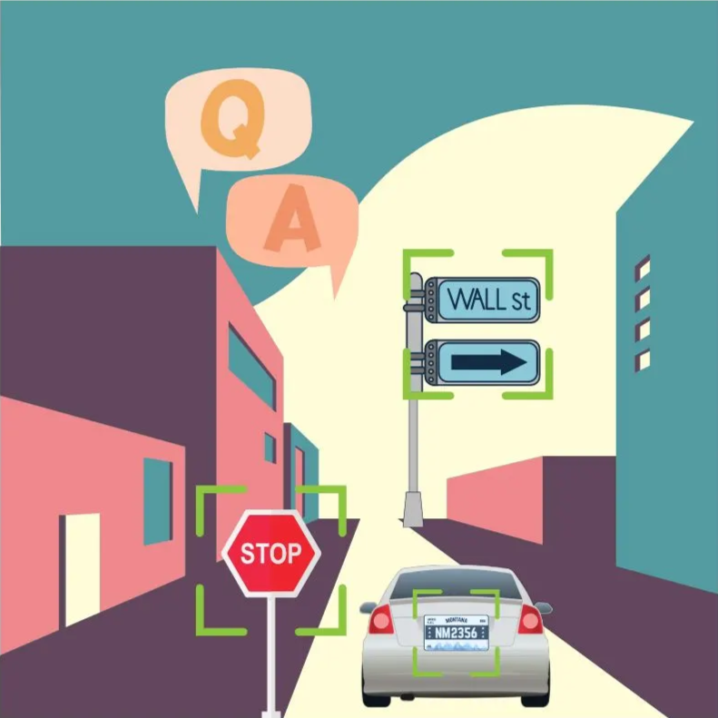

Global Skincare & Beauty Business Analysis

In this project, I built a Tableau dashboard for a global skincare and beauty business, highlighting KPIs, YoY/MoM trends, customer segmentation, and sales performance by country and product to enable actionable insights and strategic decision-making.
Quantium Chips Business Performance Analysis

In this project, I analyzed the Quantium Chips dataset using Python and SQL, generating PowerPoint slides with charts and insights on revenue, seasonality, product demand, customer segmentation, RFM, and A/B testing to highlight performance and customer behavior.
Online Grooming Self Detection System

In this project, I developed an AI system that detects and classifies grooming-related messages in online conversations. By analyzing chat patterns and linguistic cues, the model identifies early signs of harmful behavior, supporting timely intervention and enhancing online safety for young users.
Machine Learning-driven classification of personalized lower-limb rehabilitation tools for stroke patients

In this project, I built a machine-learning–based system that automatically recommends personalized gait-assistive devices for stroke patients. By analyzing clinical, functional, and biosignal features, the model improves device selection accuracy and supports more effective, patient-specific rehabilitation.
Go KarT: Automated checkout system for warehouse stores

In this project, I developed a cost-efficient automated checkout system that uses object recognition to enable scan-free checkout in warehouse stores. The system reduces congestion, lowers implementation costs compared to fully automated smart stores, and provides a scalable alternative to camera-heavy solutions like Amazon Go.
Urban Rooftop Greening Simulation Module for Greenhouse Gas Reduction

In this project, I built a satellite-image–based system that automatically identifies rooftops suitable for greening,
evaluates their carbon-absorption potential, and generates data-driven recommendations for district-level planning.
The workflow integrates deep-learning roof detection, regulatory filtering, and budget-based scenario analysis to replace manual evaluation with a scalable, objective decision-support tool.
Text Visual Question Answering Using Multimodal Deep Learning
(Master’s Thesis)

In this project, I built an efficient BERT–CNN fusion model for Visual Question Answering that incorporates OCR text correction and lightweight object localization. With far fewer parameters than transformer-based TextVQA models, it achieved higher accuracy on two public datasets, demonstrating both strong performance and computational efficiency.